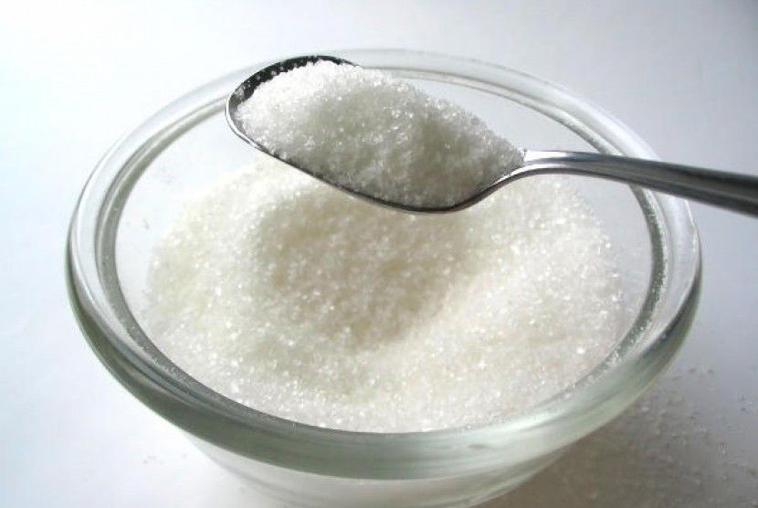
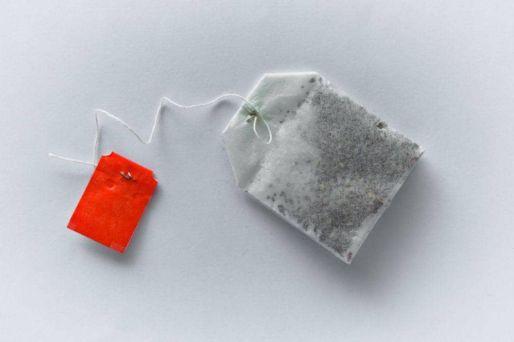
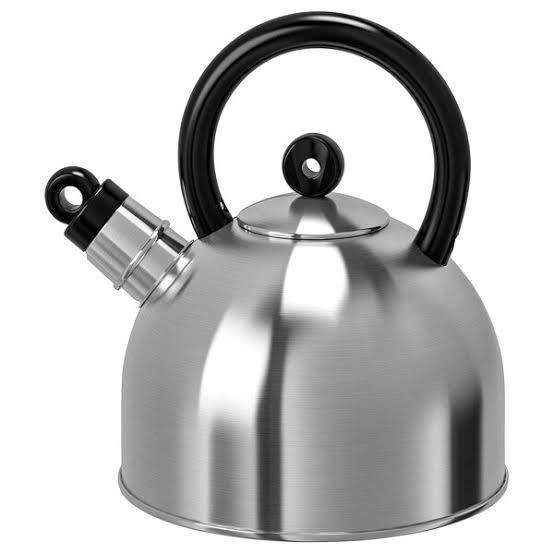
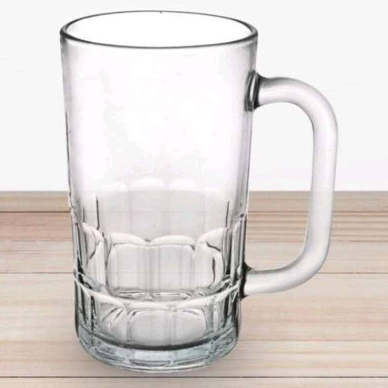

datang di DNZweb! Sebuah web tutorial statis kecil yang akan memberikan hal yang mungkin bermanfaat bagi anda! Topik kali ini adalah bagaimana cara membuat teh hangat dengan simpel dan mudah dipelajari. Masih ada yang belum bisa membuat teh sendiri? Tenang, kita bantu!

ALAT & BAHAN
GULA

TEH CELUP

AIR PANAS

GELAS

LANGKAH PEMBUATAN
1
Masukkan satu kantong teh celup ke dalam gelas yang sudah disiapkan.
2
Tuangkan air panas secukupnya, jangan terlalu penuh agar mudah saat diaduk
3
Tambahkan gula sesuai selera, lalu aduk hingga larut dan warna air berubah kecoklatan